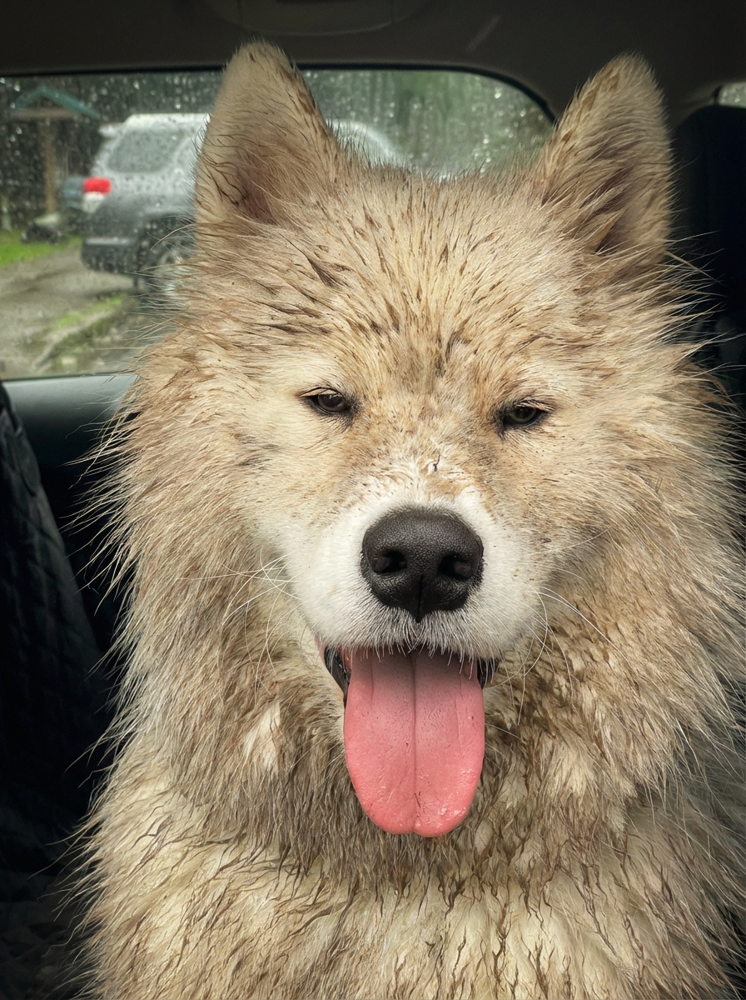

IMG_2567_Original.jpeg
Multi-LLM Analysis
78.0/100
Consensus Score
Original Review
A charming capture with excellent character. The flat lighting creates a solid technical base, but post-processing should focus on enhancing local contrast (micro-contrast) to make the muddy texture pop against the soft fur.
- Increase Texture and Clarity sliders (+15 to +20)
- Crop tighter or use a subtle vignette
- Warm White Balance slightly
This is a strong, sharp pet portrait with appealing expression and texture, but the car interior and rainy window pull attention from the face. A tighter crop plus subtle subject/background separation and controlled highlights will create a cleaner, more polished portrait while keeping the candid feel.
- Crop tighter and level slightly to reduce distracting car interior and window area; center emphasis on the face (leave some ear room) and remove most of the left seat edge
- Apply a gentle subject mask: raise exposure +0.2 to +0.4, lift shadows +10 to +20, and add texture/clarity +5 to +10 on fur while keeping global adjustments minimal
- Tame bright highlights on the white fur with highlights -15 to -30 and whites -5 to -15; then add a mild S-curve for midtone contrast
Analysis failed: Error code: 400 - {'type': 'error', 'error': {'type': 'invalid_request_error', 'message': 'messages.0.content.0.image.source.base64: image exceeds 5 MB maximum: 6511156 bytes > 5242880 bytes'}, 'request_id': 'req_011CXayCAR6jikCqMX841V8G'}
Combined Improvements Applied:
- Increase Texture and Clarity sliders (+15 to +20)
- Crop tighter or use a subtle vignette
- Warm White Balance slightly
- Local dodge/brightening on the eyes
- Crop tighter and level slightly to reduce distracting car interior and window area; center emphasis on the face (leave some ear room) and remove most of the left seat edge
- Apply a gentle subject mask: raise exposure +0.2 to +0.4, lift shadows +10 to +20, and add texture/clarity +5 to +10 on fur while keeping global adjustments minimal
- Tame bright highlights on the white fur with highlights -15 to -30 and whites -5 to -15; then add a mild S-curve for midtone contrast
- Improve eye presence using a small brush: slightly increase exposure +0.1 to +0.2, add clarity +5, and sharpen locally; optionally add a very subtle catchlight enhancement
- Reduce background distraction: apply a background mask to lower clarity/texture (-10 to -20) and slightly desaturate greens/yellows (-5 to -15); optionally add a subtle vignette (-5 to -15)
Before & After Comparison